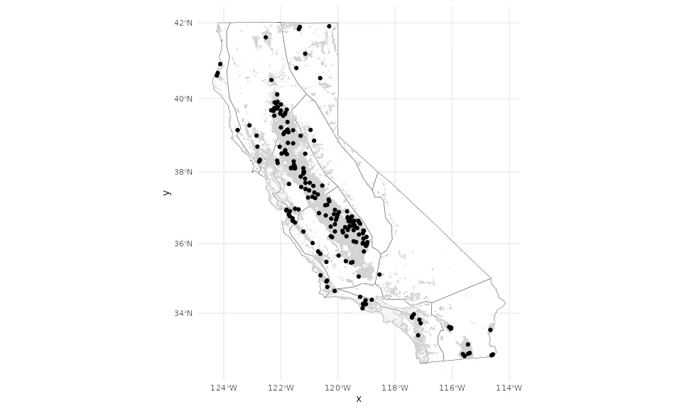
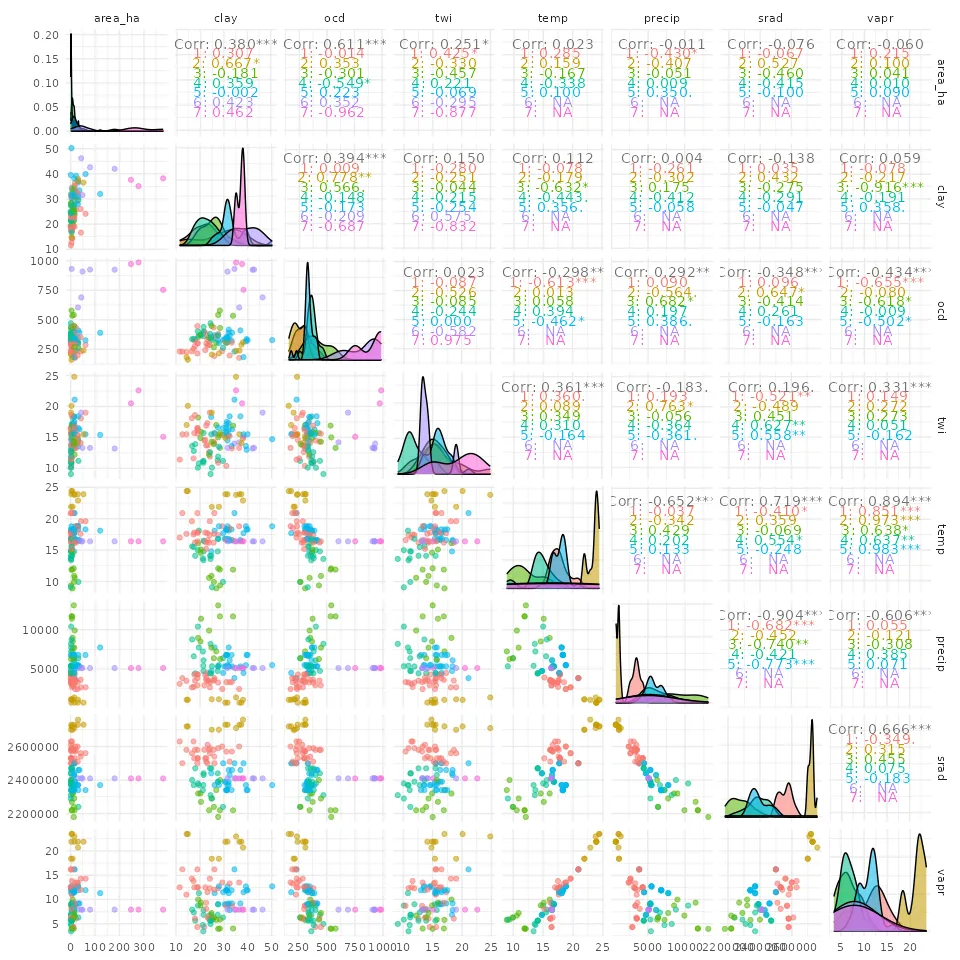
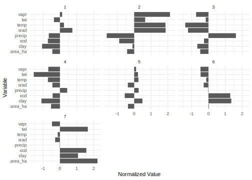

Design Points Analysis
Design Point Distribution
Design points are representative locations selected to capture the range of environmental conditions across California croplands from CADWR (2018). These are the locations where SIPNET is run to produce outputs later used in downscaling to all ~600k crop fields.
We used clustering to select design points that represent the range of environmental conditions across California croplands. The following figures illustrate the distribution of these design points, which were clustered based on environmental covariates.
The environmental covariates used for clustering are:
| Variable | Description | Source | Units |
|---|---|---|---|
| temp | Mean annual temperature | ERA5 | °C |
| precip | Mean annual precipitation | ERA5 | mm/year |
| srad | Solar radiation | ERA5 | W/m² |
| vapr | Vapor pressure deficit | ERA5 | kPa |
| clay | Clay content | SoilGrids | % |
| ocd | Organic carbon density | SoilGrids | g/kg |
| twi | Topographic wetness index | SRTM-derived | - |
Map of Selected Design Points
Here we check the geographic distribution of design points relative to the distribution of all croplands. Grey areas are the fields in the CADWR (2018) land use dataset. Boundaries are Climate Zones from CalAdapt (Lyons, 2025).
The design points should be well distributed across California croplands and Climate Zones.

Relationships Among Environmental Covariates
This pairs plot shows the relationships between covariates used for clustering, with colors indicating cluster membership.
The clusters should show distinct groupings based on the environmental covariates.

Environmental Characteristics of each Cluster
These plots present This the normalized mean values of environmental covariates for each cluster.
This summary highlights the characteristics of each cluster based on the environmental covariates used for clustering.
Here we expect to see clusters with distinct environmental signatures, reflecting the unique multivariate profiles of each cluster.
